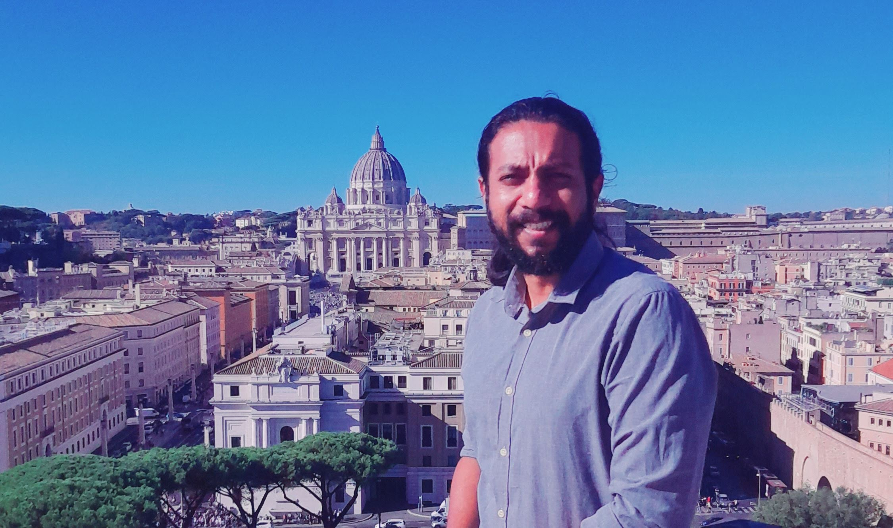

Amartya Ganguly
- Incoming Associate Professor (Biomechanics), IIIT-H, India
- Co-Founder of EnHands e.V.
Biography
Amartya Ganguly is an incoming Associate Professor of Biomechanics at the International Institute of Information and Technology (IIIT-H), Hyderabad, India. Previusly, he was an Independent Group Leader and Senior Scientist at the Munich Institute of Robotics and Machine Intelligence (MIRMI), Technical University of Munich. In 2021 he founded the Intelligent Neuroprosthetics Laboratory at MIRMI, where his team develops the biomechanical, sensory and neural control foundations of next-generation upper-limb prostheses and medical devices.
Before joining TUM, he worked on real-time musculoskeletal models of the human hand as a postdoctoral researcher at Keele University, led research and development for the ATLAS 2030 paediatric exoskeleton at Marsi Bionics in Spain, and contributed to the AGILIS clinical trial on restoring hand grasp at the University of Heidelberg. He holds a PhD in Engineering from the University of Hull, and is a co-founder of EnHands e.V., a not-for-profit that brings affordable prosthetic hands to amputees in remote regions of low-income countries.
Experience
- IncomingAssociate Professor (Biomechanics), IIIT-H, India
- 2021–presentGroup Leader and Senior Scientist, Technical University of Munich, Germany
- 2019–2020Postdoctoral Research Associate, University of Heidelberg, Germany
- 2017–2018Innovation Associate (Head of R&D), Marsi Bionics, Spain
- 2015–2017Postdoctoral Research Associate, Keele University, UK
Education
- 2010–2015PhD in Engineering, University of Hull, UK
- 2005–2009BTech in Biomedical Engineering, West Bengal University of Technology, India